Learning Module 2 Portfolio Risk and Return: Part II - Part 2: Return Generating Models
Volume 9: Portfolio Management
Learning Module 2 Portfolio Risk and Return: Part II
Part 2/4: Return Generating Models (PDF Pages 87–100)
Tập 9: Quản lý Danh mục Đầu tư (Volume 9: Portfolio Management)
Học phần 2: Rủi ro và Tỷ suất sinh lợi của Danh mục Đầu tư: Phần II (Learning Module 2: Portfolio Risk and Return: Part II)
Phần 2/4: Các Mô hình Tạo Tỷ suất sinh lợi (Return Generating Models) (Trang PDF 87–100)
Solution to 1B:
Lời giải cho câu 1B (Solution to 1B):
As we mentioned earlier, a market portfolio is a diversified portfolio, one in which no more risk can be diversified away. We have also described it as an efficient portfolio. Therefore, a market portfolio does not contain any nonsystematic risk.
Như chúng ta đã đề cập trước đó, danh mục thị trường là một danh mục đã được đa dạng hóa, một danh mục mà trong đó không còn phần rủi ro nào có thể được triệt tiêu thêm qua đa dạng hóa nữa. Chúng ta cũng đã mô tả nó như một danh mục hiệu quả (efficient portfolio). Do đó, một danh mục thị trường không chứa bất kỳ rủi ro phi hệ thống nào.
Solution to 2:
Lời giải cho câu 2 (Solution to 2):
Based on the facts given, Asset A’s systematic risk is one-third greater than Asset B’s systematic risk. Because only systematic risk is priced or receives a return, the expected rate of return must be higher for Asset A.
Dựa trên các dữ kiện đã cho, rủi ro hệ thống của Tài sản A lớn hơn một phần ba so với rủi ro hệ thống của Tài sản B (vì $\frac{2}{3} \times 2 = \frac{4}{3}$ tổng rủi ro của B, so với $1$ lần ở B). Bởi vì chỉ có rủi ro hệ thống mới được định giá hay nhận được tỷ suất sinh lợi đền bù, nên tỷ suất sinh lợi kỳ vọng của Tài sản A phải cao hơn.
RETURN GENERATING MODELS
CÁC MÔ HÌNH TẠO TỶ SUẤT SINH LỢI (RETURN GENERATING MODELS)
6
6
explain return generating models (including the market model) and their uses
giải thích các mô hình tạo tỷ suất sinh lợi (return generating models, bao gồm cả mô hình thị trường – market model) và công dụng của chúng
As previously mentioned, in order to form the market portfolio, you should combine all available risky assets. Knowledge of the correlations among those assets allows us to estimate portfolio risk. You also learned that a fully diversified portfolio will include all asset classes and essentially all assets in those asset classes. The work required for construction of the market portfolio is formidable. For example, for a portfolio of 1,000 assets, we will need 1,000 return estimates, 1,000 standard deviation estimates, and 499,500 (1,000 × 999 ÷ 2) correlations. Other related questions that arise with this analysis are whether we really need all 1,000 assets and what happens if there are errors in these estimates.
Như đã đề cập trước đó, để hình thành danh mục thị trường, bạn cần kết hợp tất cả các tài sản rủi ro hiện có. Việc nắm được các hệ số tương quan giữa những tài sản đó cho phép chúng ta ước tính rủi ro của danh mục đầu tư. Bạn cũng đã biết rằng một danh mục được đa dạng hóa hoàn toàn sẽ bao gồm tất cả các loại tài sản (asset classes) và về cơ bản là tất cả các tài sản nằm trong những loại tài sản đó. Khối lượng công việc cần thiết để xây dựng danh mục thị trường là vô cùng đồ sộ. Ví dụ, đối với một danh mục gồm 1,000 tài sản, chúng ta sẽ cần 1,000 ước tính tỷ suất sinh lợi, 1,000 ước tính độ lệch chuẩn, và 499,500 ($1,000 \times 999 \div 2$) hệ số tương quan. Các câu hỏi liên quan khác nảy sinh từ phân tích này là liệu chúng ta có thực sự cần tới tất cả 1,000 tài sản đó hay không và điều gì sẽ xảy ra nếu có sai số trong các ước tính này.
An alternate method of constructing an optimal portfolio is simpler and easier to implement. An investor begins with a known portfolio, such as the S&P 500, and then adds other assets one at a time on the basis of the asset’s standard deviation, expected return, and impact on the portfolio’s risk and return. This process continues until the addition of another asset does not have a significant impact on the performance of the portfolio. The process requires only estimates of systematic risk for each asset because investors will not be compensated for nonsystematic risk. Expected returns can be calculated by using return-generating models, as we will discuss in this section. In addition to using return-generating models, we will also decompose total variance into systematic variance and nonsystematic variance and establish a formal relationship between systematic risk and return. In the next section, we will expand on this discussion and introduce the CAPM as the preferred return-generating model.
Một phương pháp thay thế để xây dựng danh mục tối ưu đơn giản và dễ triển khai hơn. Nhà đầu tư bắt đầu với một danh mục đã biết, chẳng hạn như S&P 500, và sau đó thêm từng tài sản khác vào dựa trên độ lệch chuẩn, tỷ suất sinh lợi kỳ vọng của tài sản đó, và tác động của nó lên rủi ro cũng như tỷ suất sinh lợi của danh mục. Quá trình này tiếp diễn cho đến khi việc thêm vào một tài sản mới không còn tạo ra tác động đáng kể đến hiệu quả hoạt động của danh mục. Quá trình này chỉ đòi hỏi các ước tính về rủi ro hệ thống cho từng tài sản bởi vì các nhà đầu tư sẽ không được đền bù cho rủi ro phi hệ thống. Tỷ suất sinh lợi kỳ vọng có thể được tính toán bằng cách sử dụng các mô hình tạo tỷ suất sinh lợi (return-generating models), như chúng ta sẽ thảo luận trong phần này. Bên cạnh việc sử dụng các mô hình tạo tỷ suất sinh lợi, chúng ta cũng sẽ phân rã tổng phương sai thành phương sai hệ thống và phương sai phi hệ thống, đồng thời thiết lập một mối quan hệ chính thức giữa rủi ro hệ thống và tỷ suất sinh lợi. Trong phần tiếp theo, chúng ta sẽ mở rộng cuộc thảo luận này và giới thiệu CAPM như là mô hình tạo tỷ suất sinh lợi được ưa chuộng.
Return-Generating Models
Các Mô hình Tạo Tỷ suất sinh lợi (Return-Generating Models)
A return-generating model is a model that can provide an estimate of the expected return of a security given certain parameters. If systematic risk is the only relevant parameter for return, then the return-generating model will estimate the expected return for any asset given the level of systematic risk.
Một mô hình tạo tỷ suất sinh lợi (return-generating model) là một mô hình có thể cung cấp ước tính về tỷ suất sinh lợi kỳ vọng của một chứng khoán khi biết trước một số tham số nhất định. Nếu rủi ro hệ thống là tham số có liên quan duy nhất đối với tỷ suất sinh lợi, thì mô hình tạo tỷ suất sinh lợi sẽ ước tính tỷ suất sinh lợi kỳ vọng cho bất kỳ tài sản nào khi biết mức rủi ro hệ thống.
As with any model, the quality of estimates of expected return will depend on the quality of input estimates and the accuracy of the model. Because it is difficult to decide which factors are appropriate for generating returns, the most general form of a return-generating model is a multi-factor model. A multi-factor model allows more than one variable to be considered in estimating returns and can be built using different kinds of factors, such as macroeconomic, fundamental, and statistical factors.
Cũng như bất kỳ mô hình nào, chất lượng của các ước tính về tỷ suất sinh lợi kỳ vọng sẽ phụ thuộc vào chất lượng của các ước tính đầu vào và độ chính xác của mô hình. Bởi vì rất khó để quyết định những nhân tố nào là phù hợp cho việc tạo ra tỷ suất sinh lợi, dạng tổng quát nhất của mô hình tạo tỷ suất sinh lợi là một mô hình đa nhân tố (multi-factor model). Một mô hình đa nhân tố (multi-factor model) cho phép xem xét nhiều hơn một biến số khi ước tính tỷ suất sinh lợi và có thể được xây dựng bằng cách sử dụng các loại nhân tố khác nhau, chẳng hạn như các nhân tố kinh tế vĩ mô (macroeconomic), nhân tố cơ bản (fundamental) và nhân tố thống kê (statistical).
Macroeconomic factor models use economic factors that are correlated with security returns. These factors may include economic growth, the interest rate, the inflation rate, productivity, employment, and consumer confidence. Past relationships with returns are estimated to obtain parameter estimates, which are, in turn, used for computing expected returns. Fundamental factor models analyze and use relationships between security returns and the company’s underlying fundamentals, such as, for example, earnings, earnings growth, cash flow generation, investment in research, advertising, and number of patents. Finally, in a statistical factor model, historical and cross-sectional return data are analyzed to identify factors that explain variance or covariance in observed returns. These statistical factors, however, may or may not have an economic or fundamental connection to returns. For example, the conference to which the American football Super Bowl winner belongs, whether the American Football Conference or the National Football Conference, may be a factor in US stock returns, but no obvious economic connection seems to exist between the winner’s conference and US stock returns. Moreover, data mining may generate many spurious factors that are devoid of any economic meaning. Because of this limitation, analysts prefer the macroeconomic and fundamental factor models for specifying and estimating return-generating models.
Các mô hình nhân tố kinh tế vĩ mô (macroeconomic factor models) sử dụng các nhân tố kinh tế có tương quan với tỷ suất sinh lợi của chứng khoán. Các nhân tố này có thể bao gồm tăng trưởng kinh tế, lãi suất, tỷ lệ lạm phát, năng suất, việc làm và niềm tin của người tiêu dùng. Các mối quan hệ trong quá khứ với tỷ suất sinh lợi được ước tính để thu được các ước lượng tham số, mà đến lượt chúng lại được sử dụng để tính toán tỷ suất sinh lợi kỳ vọng. Các mô hình nhân tố cơ bản (fundamental factor models) phân tích và sử dụng các mối quan hệ giữa tỷ suất sinh lợi chứng khoán và các yếu tố nền tảng cơ bản của công ty, chẳng hạn như lợi nhuận (earnings), tăng trưởng lợi nhuận (earnings growth), khả năng tạo dòng tiền, đầu tư vào nghiên cứu, quảng cáo và số lượng bằng sáng chế. Cuối cùng, trong một mô hình nhân tố thống kê (statistical factor model), dữ liệu tỷ suất sinh lợi lịch sử và chéo (historical and cross-sectional return data) được phân tích để xác định các nhân tố giải thích được phương sai hoặc hiệp phương sai trong các tỷ suất sinh lợi quan sát được. Tuy nhiên, các nhân tố thống kê này có thể có hoặc không có mối liên hệ kinh tế hay cơ bản nào với tỷ suất sinh lợi. Ví dụ, liên đoàn mà đội vô địch giải bóng bầu dục Mỹ Super Bowl trực thuộc — dù là Liên đoàn Bóng bầu dục Mỹ (American Football Conference) hay Liên đoàn Bóng bầu dục Quốc gia (National Football Conference) — có thể là một nhân tố trong tỷ suất sinh lợi cổ phiếu Hoa Kỳ, nhưng dường như không có mối liên hệ kinh tế rõ ràng nào tồn tại giữa liên đoàn của đội chiến thắng và tỷ suất sinh lợi cổ phiếu Hoa Kỳ. Hơn nữa, việc khai phá dữ liệu (data mining) có thể tạo ra nhiều nhân tố giả mạo (spurious factors) hoàn toàn không mang bất kỳ ý nghĩa kinh tế nào. Do hạn chế này, các nhà phân tích ưa chuộng các mô hình nhân tố kinh tế vĩ mô và nhân tố cơ bản hơn trong việc xác định và ước lượng các mô hình tạo tỷ suất sinh lợi.
A general return-generating model is expressed in the following manner:
Một mô hình tạo tỷ suất sinh lợi tổng quát được biểu diễn theo cách sau:
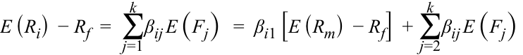
The model has k factors, E ( F 1), E ( F 2), ... E ( Fk ). The coefficients, β ij , are the factor weights (sometimes called factor loadings) associated with each factor. The left-hand side of the model has the expected excess return (i.e., the expected return over the risk-free rate). The right-hand side provides the risk factors that would generate the return or premium required to assume that risk. We have separated out one factor, E ( Rm ), which represents the market return. All models contain return on the market portfolio as a key factor.
Mô hình có $k$ nhân tố: $E(F_1), E(F_2), \dots, E(F_k)$. Các hệ số $\beta_{ij}$ là các trọng số nhân tố (factor weights, đôi khi được gọi là hệ số tải nhân tố – factor loadings) gắn liền với mỗi nhân tố. Vế trái của mô hình là tỷ suất sinh lợi vượt trội kỳ vọng (expected excess return, tức là tỷ suất sinh lợi kỳ vọng vượt trên lãi suất phi rủi ro). Vế phải cung cấp các nhân tố rủi ro sẽ tạo ra tỷ suất sinh lợi hoặc phần bù (premium) cần thiết để gánh chịu rủi ro đó. Chúng ta đã tách riêng một nhân tố, $E(R_m)$, đại diện cho tỷ suất sinh lợi thị trường. Tất cả các mô hình đều bao gồm tỷ suất sinh lợi của danh mục thị trường như một nhân tố cốt lõi.
Three-Factor and Four-Factor Models
Mô hình Ba Nhân tố và Bốn Nhân tố (Three-Factor and Four-Factor Models)
Eugene Fama and Kenneth French1 suggested that a return-generating model for stock returns should include relative market capitalization of the company (“size”) relative book-to-market value of the company in addition to beta. Fama and French found that past returns could be explained better with their model than with other models available at that time, most notably, the capital asset pricing model. Mark Carhart (1997) extended the Fama and French model by adding another factor: momentum, defined as relative past stock returns.
Eugene Fama và Kenneth French$^1$ đã đề xuất rằng một mô hình tạo tỷ suất sinh lợi cho tỷ suất sinh lợi cổ phiếu nên bao gồm vốn hóa thị trường tương đối của công ty (“quy mô” – “size”) và giá trị sổ sách trên giá trị thị trường tương đối (relative book-to-market value) của công ty bên cạnh hệ số beta. Fama và French nhận thấy rằng tỷ suất sinh lợi trong quá khứ có thể được giải thích tốt hơn bằng mô hình của họ so với các mô hình khác hiện có vào thời điểm đó, đáng chú ý nhất là mô hình định giá tài sản vốn (CAPM). Mark Carhart (1997) đã mở rộng mô hình Fama và French bằng cách bổ sung thêm một nhân tố nữa: quán tính giá (momentum), được định nghĩa là tỷ suất sinh lợi cổ phiếu tương đối trong quá khứ.
The Single-Index Model
Mô hình Đơn Chỉ số (The Single-Index Model)
The simplest form of a return-generating model is a single-factor linear model, in which only one factor is considered. The most common implementation is a single-index model, which uses the market factor in the following form: E ( Ri ) – Rf = β i [ E ( Rm ) – Rf ].
Dạng đơn giản nhất của mô hình tạo tỷ suất sinh lợi là mô hình tuyến tính đơn nhân tố (single-factor linear model), trong đó chỉ có một nhân tố duy nhất được xem xét. Cách triển khai phổ biến nhất là mô hình đơn chỉ số (single-index model), sử dụng nhân tố thị trường dưới dạng sau: $E(R_i) - R_f = \beta_i [E(R_m) - R_f]$.
Although the single-index model is simple, it fits nicely with the capital market line. Recall that the CML is linear, with an intercept of Rf and a slope of [ E ( Rm ) – Rf ]/σ m . We can rewrite the CML by moving the intercept to the left-hand side of the equation, rearranging the terms, and generalizing the subscript from p to i , for any security:
Mặc dù mô hình đơn chỉ số rất đơn giản, nhưng nó lại khớp một cách hoàn hảo với đường thị trường vốn (CML). Hãy nhớ lại rằng đường CML là tuyến tính, với điểm cắt trục tung là $R_f$ và độ dốc là $[E(R_m) - R_f]/\sigma_m$. Chúng ta có thể viết lại phương trình CML bằng cách chuyển điểm cắt trục tung sang vế trái của phương trình, sắp xếp lại các số hạng, và khái quát hóa chỉ số dưới từ $p$ sang $i$, cho bất kỳ chứng khoán nào:
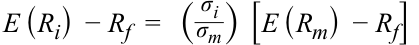
The factor loading or factor weight, σ i /σ m , refers to the ratio of total security risk to total market risk. To obtain a better understanding of factor loading and to illustrate that the CML reduces to a single-index model, we decompose total risk into its components.
Hệ số tải nhân tố hay trọng số nhân tố, $\sigma_i / \sigma_m$, phản ánh tỷ số giữa tổng rủi ro của chứng khoán trên tổng rủi ro của thị trường. Để hiểu rõ hơn về hệ số tải nhân tố và để minh họa rằng đường CML có thể rút gọn về một mô hình đơn chỉ số, chúng ta hãy phân rã tổng rủi ro thành các thành phần của nó.
Decomposition of Total Risk for a Single-Index Model
Phân rã Tổng Rủi ro cho Mô hình Đơn Chỉ số (Decomposition of Total Risk for a Single-Index Model)
With the introduction of return-generating models, particularly the single-index model, we are able to decompose total variance into systematic and nonsystematic variances. Instead of using expected returns in the single index, let us use realized returns. The difference between expected returns and realized returns is attributable to non-market changes, as an error term, ei , in the second equation below:
Với sự ra đời của các mô hình tạo tỷ suất sinh lợi, đặc biệt là mô hình đơn chỉ số, chúng ta có thể phân rã tổng phương sai thành phương sai hệ thống và phương sai phi hệ thống. Thay vì sử dụng tỷ suất sinh lợi kỳ vọng trong mô hình đơn chỉ số, chúng ta hãy sử dụng tỷ suất sinh lợi thực tế (realized returns). Chênh lệch giữa tỷ suất sinh lợi kỳ vọng và tỷ suất sinh lợi thực tế được quy cho các biến động phi thị trường (non-market changes), dưới dạng một phần dư sai số (error term), $e_i$, trong phương trình thứ hai dưới đây:
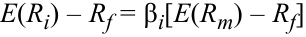
and
và
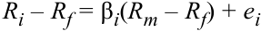
The variance of realized returns can be expressed in the equation below (note that Rf is a constant). We can further drop the covariance term in this equation because, by definition, any non-market return is uncorrelated with the market. Thus, we are able to decompose total variance into systematic and nonsystematic variances in the second equation below:
Phương sai của tỷ suất sinh lợi thực tế có thể được biểu diễn trong phương trình dưới đây (lưu ý rằng $R_f$ là một hằng số). Chúng ta có thể lược bỏ thêm số hạng hiệp phương sai trong phương trình này bởi vì, theo định nghĩa, bất kỳ tỷ suất sinh lợi phi thị trường nào cũng đều không tương quan với thị trường. Do đó, chúng ta có thể phân rã tổng phương sai thành phương sai hệ thống và phương sai phi hệ thống trong phương trình thứ hai dưới đây:
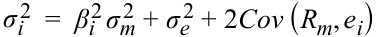
Total variance = Systematic variance + Nonsystematic variance, which can be written as
Tổng phương sai $=$ Phương sai hệ thống $+$ Phương sai phi hệ thống, có thể được viết dưới dạng:
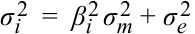
Total risk can be expressed as
Tổng rủi ro có thể được biểu diễn như sau:
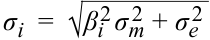
Because nonsystematic risk is zero for well-diversified portfolios, such as the market portfolio, the total risk of a market portfolio and other similar portfolios is only systematic risk, which is β i σ m . We can now return to the CML discussed in the previous subsection and replace σ i with β i σ m because the CML assumes that the market is a diversified portfolio. By making this substitution for the above equation, we get the following single-index model:
Bởi vì rủi ro phi hệ thống bằng không đối với các danh mục đầu tư đã được đa dạng hóa tốt, chẳng hạn như danh mục thị trường, nên tổng rủi ro của danh mục thị trường và các danh mục tương tự khác chỉ còn là rủi ro hệ thống, tức là $\beta_i \sigma_m$. Bây giờ chúng ta có thể quay lại đường CML đã thảo luận ở tiểu mục trước và thay thế $\sigma_i$ bằng $\beta_i \sigma_m$ vì đường CML giả định rằng thị trường là một danh mục đã được đa dạng hóa. Bằng cách thực hiện phép thế này vào phương trình trên, chúng ta thu được mô hình đơn chỉ số sau đây:
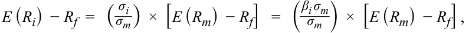
E ( Ri ) – Rf = β i [ E ( Rm ) – Rf ]
Thus, the CML, which holds only for well-diversified portfolios, is fully consistent with a single-index model.
Như vậy, đường CML, vốn chỉ đúng cho các danh mục đầu tư được đa dạng hóa tốt, hoàn toàn nhất quán với mô hình đơn chỉ số.
In summary, total variance may be decomposed into systematic and nonsystematic variances and the CML is the same as a single-index model for diversified portfolios.
Tóm lại, tổng phương sai có thể được phân rã thành phương sai hệ thống và phương sai phi hệ thống, và đường CML cũng chính là mô hình đơn chỉ số đối với các danh mục đầu tư đã được đa dạng hóa.
Return-Generating Models: The Market Model
Các Mô hình Tạo Tỷ suất sinh lợi: Mô hình Thị trường (Return-Generating Models: The Market Model)
The most common implementation of a single-index model is the market model , in which the market return is the single factor or single index. In principle, the market model and the single-index model are similar. The difference is that the market model is easier to work with and is normally used for estimating beta risk and computing abnormal returns. The market model is
Cách triển khai phổ biến nhất của mô hình đơn chỉ số là mô hình thị trường (market model), trong đó tỷ suất sinh lợi thị trường là nhân tố duy nhất hay chỉ số duy nhất. Về nguyên tắc, mô hình thị trường và mô hình đơn chỉ số là tương tự nhau. Điểm khác biệt là mô hình thị trường dễ làm việc hơn và thường được sử dụng để ước tính rủi ro beta và tính toán tỷ suất sinh lợi bất thường (abnormal returns). Mô hình thị trường có dạng:
Ri = α i + β iRm + ei
To be consistent with the previous section, α i = Rf (1 – β). The intercept, α i , and slope coefficient, β i , can be estimated by using historical security and market returns. These parameter estimates are then used to predict company-specific returns that a security may earn in a future period. Assume that a regression of Wal-Mart’s historical daily returns on S&P 500 daily returns gives an α i of 0.0001 and a β i of 0.9. Thus, Wal-Mart’s expected daily return = 0.0001 + 0.90 × Rm . If, on a given day the market rises by 1 percent and Wal-Mart’s stock rises by 2 percent, then Wal-Mart’s company-specific return ( ei ) for that day = Ri − E ( Ri ) = Ri – (α i + β iRm ) = 0.02 – (0.0001 + 0.90 × 0.01) = 0.0109, or 1.09%. In other words, Wal-Mart earned an abnormal return of 1.09 percent on that day.
Để nhất quán với phần trước, $\alpha_i = R_f(1 - \beta_i)$. Hệ số chặn (intercept), $\alpha_i$, và hệ số góc (slope coefficient), $\beta_i$, có thể được ước tính bằng cách sử dụng tỷ suất sinh lợi lịch sử của chứng khoán và của thị trường. Các ước lượng tham số này sau đó được sử dụng để dự báo tỷ suất sinh lợi đặc thù của công ty (company-specific returns) mà một chứng khoán có thể kiếm được trong một kỳ tương lai. Giả sử rằng một phép hồi quy tỷ suất sinh lợi hàng ngày trong lịch sử của Wal-Mart theo tỷ suất sinh lợi hàng ngày của S&P 500 cho ra $\alpha_i$ bằng $0.0001$ và $\beta_i$ bằng $0.9$. Do đó, tỷ suất sinh lợi hàng ngày kỳ vọng của Wal-Mart $= 0.0001 + 0.90 \times R_m$. Nếu vào một ngày nhất định, thị trường tăng 1% và cổ phiếu của Wal-Mart tăng 2%, thì tỷ suất sinh lợi đặc thù công ty ($e_i$) của Wal-Mart trong ngày hôm đó $= R_i - E(R_i) = R_i - (\alpha_i + \beta_i R_m) = 0.02 - (0.0001 + 0.90 \times 0.01) = 0.0109$, hay $1.09\%$. Nói cách khác, Wal-Mart đã kiếm được một mức tỷ suất sinh lợi bất thường (abnormal return) là 1.09% vào ngày hôm đó.
7 CALCULATION AND INTERPRETATION OF BETA
7 TÍNH TOÁN VÀ DIỄN GIẢI HỆ SỐ BETA (CALCULATION AND INTERPRETATION OF BETA)
calculate and interpret beta
tính toán và diễn giải hệ số beta (calculate and interpret beta)
We begin with the single-index model introduced earlier using realized returns and rewrite it as
Chúng ta bắt đầu với mô hình đơn chỉ số đã được giới thiệu trước đó sử dụng tỷ suất sinh lợi thực tế và viết lại nó như sau:
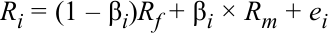
Because systematic risk depends on the correlation between the asset and the market, we can arrive at a measure of systematic risk from the covariance between Ri and Rm , where Ri is defined using the above equation. Note that the risk-free rate is a constant, so the first term in Ri drops out.
Bởi vì rủi ro hệ thống phụ thuộc vào độ tương quan giữa tài sản và thị trường, chúng ta có thể đi đến một thước đo rủi ro hệ thống từ hiệp phương sai giữa $R_i$ và $R_m$, trong đó $R_i$ được định nghĩa bằng phương trình trên. Lưu ý rằng lãi suất phi rủi ro là một hằng số, vì vậy số hạng đầu tiên trong $R_i$ sẽ bị triệt tiêu.
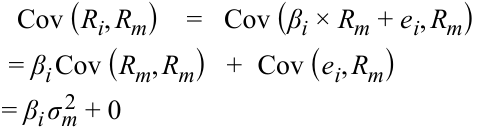
The first term is beta multiplied by the variance of Rm . Because the error term is uncorrelated with the market, the second term drops out. Then, we can rewrite the equation in terms of beta as follows:
Số hạng đầu tiên là beta nhân với phương sai của $R_m$. Bởi vì phần dư sai số không tương quan với thị trường, số hạng thứ hai bị triệt tiêu. Khi đó, chúng ta có thể viết lại phương trình theo beta như sau:
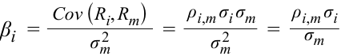
The above formula shows the expression for beta, β i , which is similar to the factor loading in the single-index model presented earlier. For example, if the correlation between an asset and the market is 0.70 and the asset and market have standard deviations of return of 0.25 and 0.15, respectively, the asset’s beta would be (0.70)(0.25)/0.15 = 1.17. If the asset’s covariance with the market and market variance were given as 0.026250 and 0.02250, respectively, the calculation would be 0.026250/0.02250 = 1.17. The beta in the market model includes an adjustment for the correlation between asset i and the market because the market model covers all assets whereas the CML works only for fully diversified portfolios.
Công thức trên cho thấy biểu thức tính hệ số beta, $\beta_i$, tương tự như hệ số tải nhân tố trong mô hình đơn chỉ số đã trình bày trước đó. Ví dụ, nếu hệ số tương quan giữa một tài sản và thị trường là 0.70 và tài sản cùng thị trường có độ lệch chuẩn của tỷ suất sinh lợi lần lượt là 0.25 và 0.15, thì beta của tài sản sẽ là $(0.70)(0.25)/0.15 = 1.17$. Nếu hiệp phương sai của tài sản với thị trường và phương sai thị trường được cho lần lượt là 0.026250 và 0.02250, thì phép tính sẽ là $0.026250/0.02250 = 1.17$. Hệ số beta trong mô hình thị trường bao gồm một sự điều chỉnh cho hệ số tương quan giữa tài sản $i$ và thị trường bởi vì mô hình thị trường bao quát tất cả các tài sản trong khi đường CML chỉ áp dụng cho các danh mục đầu tư đã được đa dạng hóa hoàn toàn.
As shown in the above equation, beta is a measure of how sensitive an asset’s return is to the market as a whole and is calculated as the covariance of the return on i and the return on the market divided by the variance of the market return; that expression is equivalent to the product of the asset’s correlation with the market with a ratio of standard deviations of return (i.e., the ratio of the asset’s standard deviation to the market’s). As we have shown, beta captures an asset’s systematic risk, or the portion of an asset’s risk that cannot be eliminated by diversification. The variances and correlations required for the calculation of beta are usually based on historical returns.
Như được thể hiện trong phương trình trên, hệ số beta (beta) là một thước đo mức độ nhạy cảm (sensitivity) của tỷ suất sinh lợi của một tài sản đối với toàn bộ thị trường nói chung và được tính bằng hiệp phương sai giữa tỷ suất sinh lợi của tài sản $i$ và tỷ suất sinh lợi của thị trường chia cho phương sai của tỷ suất sinh lợi thị trường; biểu thức đó tương đương với tích số giữa hệ số tương quan của tài sản với thị trường nhân với tỷ số độ lệch chuẩn của tỷ suất sinh lợi (tức là tỷ số giữa độ lệch chuẩn của tài sản trên độ lệch chuẩn của thị trường). Như chúng ta đã chỉ ra, hệ số beta nắm bắt rủi ro hệ thống của một tài sản, hay phần rủi ro của một tài sản không thể bị loại bỏ thông qua đa dạng hóa. Các phương sai và hệ số tương quan cần thiết để tính toán beta thường dựa trên tỷ suất sinh lợi lịch sử.
A positive beta indicates that the return of an asset follows the general market trend, whereas a negative beta shows that the return of an asset generally follows a trend that is opposite to that of the market. In other words, a positive beta indicates that the return of an asset moves in the same direction of the market, whereas a negative beta indicates that the return of an asset moves in the opposite direction of the market. A risk-free asset’s beta is zero because its covariance with other assets is zero. In other words, a beta of zero indicates that the asset’s return has no correlation with movements in the market. The market’s beta can be calculated by substituting σ m for σ i in the numerator. Also, any asset’s correlation with itself is 1, so the beta of the market is 1:
Một hệ số beta dương cho biết tỷ suất sinh lợi của một tài sản đi theo xu hướng chung của thị trường, trong khi một hệ số beta âm cho thấy tỷ suất sinh lợi của một tài sản nhìn chung đi theo xu hướng ngược lại với xu hướng của thị trường. Nói cách khác, một hệ số beta dương cho biết tỷ suất sinh lợi của tài sản biến động cùng chiều với thị trường, trong khi một hệ số beta âm cho biết tỷ suất sinh lợi của tài sản biến động ngược chiều với thị trường. Hệ số beta của một tài sản phi rủi ro bằng không bởi vì hiệp phương sai của nó với các tài sản khác bằng không. Nói cách khác, hệ số beta bằng không cho biết tỷ suất sinh lợi của tài sản không có sự tương quan nào với các biến động trên thị trường. Hệ số beta của thị trường có thể được tính bằng cách thay thế $\sigma_m$ cho $\sigma_i$ ở tử số. Ngoài ra, hệ số tương quan của bất kỳ tài sản nào với chính nó đều bằng 1, vì vậy hệ số beta của thị trường bằng 1:
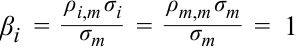
Because the market’s beta is 1, the average beta of stocks in the market, by definition, is 1. In terms of correlation, most stocks, especially in developed markets, tend to be highly correlated with the market, with correlations in excess of 0.70. Some US broad market indexes, such as the S&P 500, the Dow Jones 30, and the NASDAQ 100, have even higher correlations that are in excess of 0.90. The correlations among different sectors are also high, which shows that companies have similar reactions to the same economic and market changes. As a consequence and as a practical matter, finding assets that have a consistently negative beta is unusual because of the market’s broad effects on all assets.
Bởi vì hệ số beta của thị trường bằng 1, nên hệ số beta trung bình của các cổ phiếu trên thị trường, theo định nghĩa, cũng bằng 1. Xét về mặt tương quan, hầu hết các cổ phiếu, đặc biệt là ở các thị trường phát triển, có xu hướng tương quan cao với thị trường, với hệ số tương quan vượt quá 0.70. Một số chỉ số thị trường rộng lớn của Hoa Kỳ, chẳng hạn như S&P 500, Dow Jones 30 và NASDAQ 100, thậm chí còn có mức tương quan cao hơn nữa, vượt quá 0.90. Hệ số tương quan giữa các nhóm ngành (sectors) khác nhau cũng rất cao, điều này cho thấy các công ty có những phản ứng tương tự trước cùng những thay đổi về kinh tế và thị trường. Hệ quả là, trên thực tế, việc tìm kiếm các tài sản có hệ số beta âm một cách nhất quán là điều hiếm gặp do tác động bao trùm của thị trường lên tất cả các tài sản.
EXAMPLE 5
VÍ DỤ 5 (EXAMPLE 5)
Calculation of Beta
Tính toán Hệ số Beta (Calculation of Beta)
Assuming that the risk (standard deviation) of the market is 25 percent, calculate the beta for the following assets:
Giả sử rằng rủi ro (độ lệch chuẩn) của thị trường là 25%, hãy tính hệ số beta cho các tài sản sau đây:
_ρi , m σi We use the formula for beta in answering the above questions: βi = σm
Chúng ta sử dụng công thức tính beta để trả lời các câu hỏi trên: $\beta_i = \frac{\rho_{i,m} \sigma_i}{\sigma_m}$
- A short-term US Treasury bill.
- Một tín phiếu Kho bạc Hoa Kỳ ngắn hạn.
Solution:
Lời giải (Solution):
By definition, a short-term US Treasury bill has zero risk. Therefore, its beta is zero.
Theo định nghĩa, tín phiếu Kho bạc Hoa Kỳ ngắn hạn có rủi ro bằng không. Do đó, hệ số beta của nó bằng không.
- Gold, which has a standard deviation equal to the standard deviation of the market but a zero correlation with the market.
- Vàng, có độ lệch chuẩn bằng với độ lệch chuẩn của thị trường nhưng có hệ số tương quan với thị trường bằng không.
Solution:
Lời giải (Solution):
Because the correlation of gold with the market is zero, its beta is zero.
Bởi vì hệ số tương quan của vàng với thị trường bằng không, nên hệ số beta của nó bằng không.
- A new emerging market that is not currently included in the definition of “market”—the emerging market’s standard deviation is 60 percent, and the correlation with the market is –0.1.
- Một thị trường mới nổi mới chưa được đưa vào định nghĩa về “thị trường” hiện tại — độ lệch chuẩn của thị trường mới nổi này là 60%, và hệ số tương quan với thị trường là $-0.1$.
Solution:
Lời giải (Solution):
Beta of the emerging market is –0.1 × 0.60 ÷ 0.25 = –0.24.
Hệ số beta của thị trường mới nổi là $-0.1 \times 0.60 \div 0.25 = -0.24$.
- An initial public offering or new issue of stock with a standard deviation of 40 percent and a correlation with the market of 0.7 (IPOs are usually very risky but have a relatively low correlation with the market).
- Một đợt phát hành cổ phiếu lần đầu ra công chúng (initial public offering – IPO) hoặc đợt phát hành cổ phiếu mới có độ lệch chuẩn là 40% và hệ số tương quan với thị trường là 0.7 (các cổ phiếu IPO thường rất rủi ro nhưng có độ tương quan tương đối thấp với thị trường).
Solution:
Lời giải (Solution):
Beta of the initial public offering is 0.7 × 0.40 ÷ 0.25 = 1.12.
Hệ số beta của cổ phiếu phát hành lần đầu ra công chúng là $0.7 \times 0.40 \div 0.25 = 1.12$.
Estimation of Beta
Ước lượng Hệ số Beta (Estimation of Beta)
An alternative and more practical approach is to estimate beta directly by using the market model described above. The market model, Ri = α i + β iRm + ei , is estimated by using regression analysis, which is a statistical process that evaluates the relationship between a given variable (the dependent variable) and one or more other (independent) variables. Historical security returns ( Ri ) and historical market returns ( Rm ) are inputs used for estimating the two parameters α i and β i .
Một cách tiếp cận thay thế và mang tính thực tiễn hơn là ước lượng trực tiếp hệ số beta bằng cách sử dụng mô hình thị trường đã mô tả ở trên. Mô hình thị trường, $R_i = \alpha_i + \beta_i R_m + e_i$, được ước lượng bằng cách sử dụng phân tích hồi quy (regression analysis), vốn là một quy trình thống kê đánh giá mối quan hệ giữa một biến số cho trước (biến phụ thuộc – dependent variable) và một hoặc nhiều biến số khác (biến độc lập – independent variables). Tỷ suất sinh lợi lịch sử của chứng khoán ($R_i$) và tỷ suất sinh lợi lịch sử của thị trường ($R_m$) là các đầu vào được sử dụng để ước lượng hai tham số $\alpha_i$ và $\beta_i$.
Regression analysis is similar to plotting all combinations of the asset’s return and the market return ( Ri , Rm ) and then drawing a line through all points such that it minimizes the sum of squared linear deviations from the line. Exhibit 6 illustrates the market model and the estimated parameters. The intercept, α i (sometimes referred to as the constant), and the slope term, β i , are all that is needed to define the security characteristic line and obtain beta estimates.
Phân tích hồi quy tương tự như việc biểu diễn tất cả các cặp kết hợp giữa tỷ suất sinh lợi của tài sản và tỷ suất sinh lợi của thị trường $(R_i, R_m)$ lên đồ thị rồi vẽ một đường thẳng đi qua tất cả các điểm sao cho tối thiểu hóa tổng bình phương các độ lệch tuyến tính (sum of squared linear deviations) so với đường thẳng đó. Bảng minh họa 6 minh họa mô hình thị trường và các tham số ước lượng được. Hệ số chặn, $\alpha_i$ (đôi khi được gọi là hằng số), và hệ số góc, $\beta_i$, là tất cả những gì cần thiết để xác định đường đặc trưng chứng khoán (security characteristic line) và thu được các ước lượng beta.
Exhibit 6: Beta Estimation Using a Plot of Security and Market Returns
Bảng minh họa 6: Ước lượng Beta Sử dụng Đồ thị Tỷ suất sinh lợi Chứng khoán và Thị trường (Exhibit 6: Beta Estimation Using a Plot of Security and Market Returns)
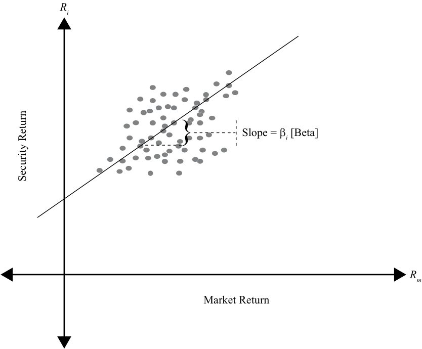
Chú thích hình ảnh: Trục tung: Tỷ suất sinh lợi chứng khoán $R_i$ (Security Return); Trục hoành: Tỷ suất sinh lợi thị trường $R_m$ (Market Return). Đường thẳng hồi quy đi qua đám mây điểm có độ dốc $\text{Slope} = \beta_i$ [Beta] và cắt trục tung tại $\alpha_i$.
Although beta estimates are important for forecasting future levels of risk, there is much concern about their accuracy. In general, shorter periods of estimation (e.g., 12 months) represent betas that are closer to the asset’s current level of systematic risk. Shorter period beta estimates, however, are also less accurate than beta estimates measured over three to five years because they may be affected by special events in that
Mặc dù các ước lượng beta rất quan trọng để dự báo mức rủi ro trong tương lai, nhưng có nhiều lo ngại về độ chính xác của chúng. Nhìn chung, các giai đoạn ước lượng ngắn hơn (ví dụ: 12 tháng) thể hiện các hệ số beta gần với mức rủi ro hệ thống hiện tại của tài sản hơn. Tuy nhiên, các ước lượng beta trong giai đoạn ngắn hơn cũng kém chính xác hơn so với các ước lượng beta được đo lường trong khoảng thời gian từ 3 đến 5 năm bởi vì chúng có thể bị ảnh hưởng bởi các sự kiện đặc biệt trong
short period. Although longer period beta estimates are more accurate, they may be a poor representation of future expectations, especially if major changes in the asset have occurred. Therefore, it is necessary to recognize that estimates of beta, whether obtained through calculation or regression analysis, may or may not represent current or future levels of an asset’s systematic risk.
khoảng thời gian ngắn đó. Mặc dù các ước lượng beta trong giai đoạn dài hơn có độ chính xác cao hơn, nhưng chúng có thể là một đại diện kém cho các kỳ vọng trong tương lai, đặc biệt nếu đã có những thay đổi lớn xảy ra đối với tài sản đó. Do đó, cần phải nhận thức rằng các ước lượng beta, dù thu được thông qua tính toán công thức hay phân tích hồi quy, có thể đại diện hoặc không đại diện cho mức rủi ro hệ thống hiện tại hay tương lai của một tài sản.
Beta and Expected Return
Hệ số Beta và Tỷ suất sinh lợi Kỳ vọng (Beta and Expected Return)
Although the single-index model, also called the capital asset pricing model (CAPM), will be discussed in greater detail in the next section, we will use the CAPM in this section to estimate returns, given asset betas. The CAPM is usually written with the risk-free rate on the right-hand side:
Mặc dù mô hình đơn chỉ số, còn được gọi là mô hình định giá tài sản vốn (capital asset pricing model – CAPM), sẽ được thảo luận chi tiết hơn trong phần tiếp theo, chúng ta sẽ sử dụng CAPM trong phần này để ước tính tỷ suất sinh lợi khi biết hệ số beta của tài sản. Phương trình CAPM thường được viết với lãi suất phi rủi ro nằm ở vế phải:
E ( Ri ) = Rf + β i [ E ( Rm ) – Rf ]
The model shows that the primary determinant of expected return for a security is its beta, or how well the security correlates with the market. The higher the beta of an asset, the higher its expected return will be. Assets with a beta greater than 1 have an expected return that is higher than the market return, whereas assets with a beta of less than 1 have an expected return that is less than the market return.
Mô hình cho thấy yếu tố quyết định chính đối với tỷ suất sinh lợi kỳ vọng của một chứng khoán là hệ số beta của nó, hay mức độ tương quan của chứng khoán đó với thị trường. Hệ số beta của một tài sản càng cao thì tỷ suất sinh lợi kỳ vọng của nó sẽ càng cao. Các tài sản có hệ số beta lớn hơn 1 có tỷ suất sinh lợi kỳ vọng cao hơn tỷ suất sinh lợi thị trường, trong khi các tài sản có hệ số beta nhỏ hơn 1 có tỷ suất sinh lợi kỳ vọng thấp hơn tỷ suất sinh lợi thị trường.
In certain cases, assets may require a return less than the risk-free return. For example, if an asset’s beta is negative, the required return will be less than the risk-free rate. When combined with the market, the asset reduces the risk of the overall portfolio, which makes the asset very valuable. Insurance is one such asset. Insurance gives a positive return when the insured’s wealth is reduced because of a catastrophic loss. In the absence of such a loss or when the insured’s wealth is growing, the insured is required to pay an insurance premium. Thus, insurance has a negative beta and a negative expected return, but helps in reducing overall risk.
Trong một số trường hợp nhất định, các tài sản có thể đòi hỏi mức tỷ suất sinh lợi thấp hơn cả tỷ suất sinh lợi phi rủi ro. Ví dụ, nếu hệ số beta của một tài sản là số âm, tỷ suất sinh lợi yêu cầu sẽ thấp hơn lãi suất phi rủi ro. Khi được kết hợp với thị trường, tài sản này làm giảm rủi ro của toàn bộ danh mục đầu tư, điều này khiến cho tài sản trở nên rất có giá trị. Bảo hiểm (insurance) là một tài sản như vậy. Bảo hiểm mang lại tỷ suất sinh lợi dương khi tài sản của người được bảo hiểm bị sụt giảm do một tổn thất thảm khốc. Khi không có tổn thất như vậy xảy ra hoặc khi tài sản của người được bảo hiểm đang tăng trưởng, người được bảo hiểm phải đóng phí bảo hiểm (insurance premium). Do đó, bảo hiểm có hệ số beta âm và tỷ suất sinh lợi kỳ vọng âm, nhưng lại giúp làm giảm rủi ro tổng thể.
EXAMPLE 6
VÍ DỤ 6 (EXAMPLE 6)
Calculation of Expected Return
Tính toán Tỷ suất sinh lợi Kỳ vọng (Calculation of Expected Return)
Alpha Natural Resources (ANR), a coal producer, buys a large but privately held coal producer in China. As a result of the cross-border acquisition of a private company, ANR’s standard deviation of returns is reduced from 50 percent to 30 percent and its correlation with the market falls from 0.95 to 0.75. Assume that the standard deviation and return of the market remain unchanged at 25 percent and 10 percent, respectively, and that the risk-free rate is 3 percent.
Alpha Natural Resources (ANR), một nhà sản xuất than đá, mua lại một công ty sản xuất than đá lớn nhưng thuộc sở hữu tư nhân tại Trung Quốc. Kết quả của thương vụ mua lại xuyên biên giới đối với một công ty tư nhân này là độ lệch chuẩn tỷ suất sinh lợi của ANR giảm từ 50% xuống 30% và hệ số tương quan của nó với thị trường giảm từ 0.95 xuống 0.75. Giả sử rằng độ lệch chuẩn và tỷ suất sinh lợi của thị trường không đổi ở mức tương ứng là 25% và 10%, và lãi suất phi rủi ro là 3%.
- Calculate the beta of ANR stock and its expected return before the acquisition.
- Hãy tính hệ số beta của cổ phiếu ANR và tỷ suất sinh lợi kỳ vọng của nó trước thương vụ mua lại.
Solution:
Lời giải (Solution):
Using the formula for β i , we can calculate β i and then the return.
Sử dụng công thức tính $\beta_i$, chúng ta có thể tính $\beta_i$ và sau đó tính tỷ suất sinh lợi.
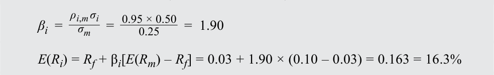
- Calculate the expected return after the acquisition.
- Hãy tính tỷ suất sinh lợi kỳ vọng sau thương vụ mua lại.
Solution:
Lời giải (Solution):
We follow the same procedure but with the after-acquisition correlation and risk.
Chúng ta thực hiện quy trình tương tự nhưng với hệ số tương quan và độ lệch chuẩn sau thương vụ mua lại.
E ( Ri ) = Rf + β i [ E ( Rm ) – Rf ] = 0.03 + 0.90 × (0.10 – 0.03) = 0.093 = 9.3%
Phần bù rủi ro thị trường (market risk premium) là 7% ($10\% - 3\%$). Khi hệ số beta thay đổi, mức thay đổi trong tỷ suất sinh lợi kỳ vọng của chứng khoán bằng phần bù rủi ro thị trường nhân với mức thay đổi của beta. Trong kịch bản này, beta của ANR đã giảm đi 1.0, vì vậy tỷ suất sinh lợi kỳ vọng mới của ANR thấp hơn 7 điểm phần trăm.
The market risk premium is 7 percent (10% – 3%). As the beta changes, the change in the security’s expected return is the market risk premium multiplied by the change in beta. In this scenario, ANR’s beta decreased by 1.0, so the new expected return for ANR is 7 percentage points lower.
Ông Miles quan sát thấy nhu cầu mạnh mẽ đối với máy nghe nhạc iPod và điện thoại iPhone nên muốn đầu tư vào cổ phiếu Apple. Thật không may, ông Miles không biết mình nên kỳ vọng mức tỷ suất sinh lợi bao nhiêu từ khoản đầu tư này. Ông được cung cấp thông tin về lãi suất phi rủi ro là 3%, tỷ suất sinh lợi thị trường là 10%, và hệ số beta của Apple là 1.5.
Mr. Miles observes the strong demand for iPods and iPhones and wants to invest in Apple stock. Unfortunately, Mr. Miles doesn’t know the return he should expect from his investment. He has been given a risk-free rate of 3 percent, a market return of 10 percent, and Apple’s beta of 1.5.
- Hãy tính tỷ suất sinh lợi kỳ vọng của Apple.
- Calculate Apple’s expected return.
Lời giải (Solution):
Solution:
E ( Ri ) = Rf + β i [ E ( Rm ) – Rf ] = 0.03 + 1.5 × (0.10 – 0.03) = 0.135 = 13.5%
- Một nhà phân tích khi xem xét cùng thông tin đó lại quyết định rằng hiệu quả hoạt động trong quá khứ của Apple không đại diện cho hiệu quả hoạt động trong tương lai của công ty. Ông nhận định rằng, với sự gia tăng trong vốn hóa thị trường của Apple, cổ phiếu Apple hiện vận động giống với thị trường hơn nhiều so với trước đây và cho rằng hệ số beta của Apple nên gần với mức 1.1 hơn. Tỷ suất sinh lợi kỳ vọng của nhà phân tích này đối với cổ phiếu Apple là bao nhiêu?
- An analyst looking at the same information decides that the past performance of Apple is not representative of its future performance. He decides that, given the increase in Apple’s market capitalization, Apple acts much more like the market than before and thinks Apple’s beta should be closer to 1.1. What is the analyst’s expected return for Apple stock?
Lời giải (Solution):
Solution:
E ( Ri ) = Rf + β i [ E ( Rm ) – Rf ] = 0.03 + 1.1 × (0.10 – 0.03) = 0.107 = 10.7%
Ví dụ này minh họa sự thiếu gắn kết giữa việc ước lượng tỷ suất sinh lợi trong quá khứ và việc phóng chiếu sang tương lai. Các nhà đầu tư cần nhận thức rõ những hạn chế của việc sử dụng tỷ suất sinh lợi quá khứ để ước tính tỷ suất sinh lợi tương lai.
This example illustrates the lack of connection between estimation of past returns and projection into the future. Investors should be aware of the limitations of using past returns for estimating future returns.
8
8
MÔ HÌNH ĐỊNH GIÁ TÀI SẢN VỐN: CÁC GIẢ ĐỊNH VÀ ĐƯỜNG THỊ TRƯỜNG CHỨNG KHOÁN (CAPITAL ASSET PRICING MODEL: ASSUMPTIONS AND THE SECURITY MARKET LINE)
CAPITAL ASSET PRICING MODEL: ASSUMPTIONS AND THE SECURITY MARKET LINE
giải thích mô hình định giá tài sản vốn (capital asset pricing model – CAPM), bao gồm các giả định của mô hình, và đường thị trường chứng khoán (security market line – SML)
explain the capital asset pricing model (CAPM), including its assumptions, and the security market line (SML) calculate and interpret the expected return of an asset using the CAPM
tính toán và diễn giải tỷ suất sinh lợi kỳ vọng (expected return) của một tài sản bằng cách sử dụng CAPM
The capital asset pricing model is one of the most significant innovations in portfolio theory. The model is simple, yet powerful; is intuitive, yet profound. The CAPM was introduced independently by William Sharpe, John Lintner, Jack Treynor, and Jan Mossin and builds on Harry Markowitz’s earlier work on diversification and modern portfolio theory.2 The model provides a linear expected return–beta relationship that
Mô hình định giá tài sản vốn (CAPM) là một trong những đổi mới quan trọng nhất trong lý thuyết danh mục đầu tư. Mô hình này đơn giản nhưng mạnh mẽ; trực quan nhưng sâu sắc. CAPM được giới thiệu một cách độc lập bởi William Sharpe, John Lintner, Jack Treynor và Jan Mossin, đồng thời được xây dựng dựa trên công trình nghiên cứu trước đó của Harry Markowitz về đa dạng hóa và lý thuyết danh mục đầu tư hiện đại (modern portfolio theory).$^2$ Mô hình cung cấp một mối quan hệ tuyến tính giữa tỷ suất sinh lợi kỳ vọng và beta,
precisely determines the expected return given the beta of an asset. In doing so, it makes the transition from total risk to systematic risk, the primary determinant of expected return. Recall the following equation:
giúp xác định chính xác tỷ suất sinh lợi kỳ vọng khi biết hệ số beta của một tài sản. Qua đó, mô hình thực hiện bước chuyển đổi từ tổng rủi ro sang rủi ro hệ thống — yếu tố quyết định chính của tỷ suất sinh lợi kỳ vọng. Hãy nhớ lại phương trình sau:
E ( Ri ) = Rf + β i [ E ( Rm ) – Rf ]
The CAPM asserts that the expected returns of assets vary only by their systematic risk as measured by beta. Two assets with the same beta will have the same expected return irrespective of the nature of those assets. Given the relationship between risk and return, all assets are defined only by their beta risk, which we will explain as the assumptions are described.
Mô hình CAPM khẳng định rằng tỷ suất sinh lợi kỳ vọng của các tài sản chỉ khác nhau do rủi ro hệ thống của chúng được đo lường bằng hệ số beta. Hai tài sản có cùng hệ số beta sẽ có cùng tỷ suất sinh lợi kỳ vọng bất kể bản chất của hai tài sản đó là gì. Dựa trên mối quan hệ giữa rủi ro và tỷ suất sinh lợi, tất cả các tài sản đều chỉ được xác định bởi rủi ro beta của chúng, điều mà chúng ta sẽ giải thích khi mô tả các giả định.
In the remainder of this section, we will examine the assumptions made in arriving at the CAPM and the limitations those assumptions entail. Second, we will implement the CAPM through the security market line to price any portfolio or asset, both efficient and inefficient. Finally, we will discuss ways in which the CAPM can be applied to investments, valuation, and capital budgeting.
Trong phần còn lại của mục này, chúng ta sẽ xem xét các giả định được đưa ra để đi đến mô hình CAPM và những hạn chế mà các giả định đó kéo theo. Thứ hai, chúng ta sẽ triển khai CAPM thông qua đường thị trường chứng khoán (SML) để định giá bất kỳ danh mục hoặc tài sản nào, dù hiệu quả hay không hiệu quả. Cuối cùng, chúng ta sẽ thảo luận về các cách thức ứng dụng CAPM vào hoạt động đầu tư, định giá và hoạch định ngân sách vốn (capital budgeting).
Assumptions of the CAPM
Các Giả định của Mô hình CAPM (Assumptions of the CAPM)
Similar to all other models, the CAPM ignores many of the complexities of financial markets by making simplifying assumptions. These assumptions allow us to gain important insights into how assets are priced without complicating the analysis. Once the basic relationships are established, we can relax the assumptions and examine how our insights need to be altered. Some of these assumptions are constraining, whereas others are benign. And other assumptions affect only a particular set of assets or only marginally affect the hypothesized relationships.
Tương tự như tất cả các mô hình khác, CAPM bỏ qua nhiều sự phức tạp của thị trường tài chính bằng cách đưa ra các giả định đơn giản hóa. Những giả định này cho phép chúng ta thu được những hiểu biết sâu sắc quan trọng về cách thức tài sản được định giá mà không làm phức tạp hóa quá trình phân tích.Một khi các mối quan hệ cơ bản đã được thiết lập, chúng ta có thể nới lỏng các giả định và xem xét cách thức những nhận định của chúng ta cần được điều chỉnh. Một số giả định này mang tính bó buộc, trong khi những giả định khác lại khá vô hại. Và một số giả định khác chỉ ảnh hưởng đến một tập hợp tài sản cụ thể hoặc chỉ ảnh hưởng không đáng kể đến các mối quan hệ được giả thuyết.
1. Investors are risk-averse, utility-maximizing, rational individuals.
1. Các nhà đầu tư là những cá nhân ngại rủi ro, tối đa hóa mức hữu dụng và có lý trí (Investors are risk-averse, utility-maximizing, rational individuals).
Risk aversion means that investors expect to be compensated for accepting risk. Note that the assumption does not require investors to have the same degree of risk aversion; it only requires that they are averse to risk. Utility maximization implies that investors want higher returns, not lower returns, and that investors always want more wealth (i.e., investors are never satisfied). Investors are understood to be rational in that they correctly evaluate and analyze available information to arrive at rational decisions. Although rational investors may use the same information to arrive at different estimates of expected risk and expected returns, homogeneity among investors (see Assumption 4) requires that investors be rational individuals.
Ngại rủi ro (risk aversion) có nghĩa là các nhà đầu tư kỳ vọng được đền bù cho việc chấp nhận rủi ro. Lưu ý rằng giả định này không đòi hỏi các nhà đầu tư phải có cùng mức độ ngại rủi ro; nó chỉ yêu cầu họ là những người ngại rủi ro. Tối đa hóa mức hữu dụng (utility maximization) hàm ý rằng các nhà đầu tư muốn tỷ suất sinh lợi cao hơn chứ không phải tỷ suất sinh lợi thấp hơn, và các nhà đầu tư luôn muốn có thêm nhiều của cải hơn (tức là các nhà đầu tư không bao giờ cảm thấy đủ). Các nhà đầu tư được hiểu là có lý trí (rational) ở chỗ họ đánh giá và phân tích đúng đắn các thông tin sẵn có để đi đến những quyết định hợp lý. Mặc dù các nhà đầu tư có lý trí có thể sử dụng cùng một thông tin để đi đến những ước tính khác nhau về rủi ro kỳ vọng và tỷ suất sinh lợi kỳ vọng, tính đồng nhất giữa các nhà đầu tư (xem Giả định 4) đòi hỏi các nhà đầu tư phải là những cá nhân có lý trí.
Risk aversion and utility maximization are generally accepted as reflecting a realistic view of the world. Yet, rationality among investors has been questioned because investors may allow their personal biases and experiences to disrupt their decision making, resulting in suboptimal investments. Nonetheless, the model’s results are unaffected by such irrational behavior as long as it does not affect prices in a significant manner (i.e., the trades of irrational investors cancel each other or are dominated by the trades of rational investors).
Sự ngại rủi ro và tối đa hóa mức hữu dụng nhìn chung được chấp nhận là phản ánh đúng góc nhìn thực tế về thế giới. Tuy nhiên, tính duy lý (rationality) giữa các nhà đầu tư đã bị đặt dấu hỏi bởi vì các nhà đầu tư có thể để những thiên kiến cá nhân (personal biases) và kinh nghiệm của họ làm gián đoạn quá trình ra quyết định, dẫn đến các khoản đầu tư dưới mức tối ưu (suboptimal investments). Tuy nhiên, các kết quả của mô hình vẫn không bị ảnh hưởng bởi hành vi phi lý trí như vậy miễn là nó không tác động đến giá cả một cách đáng kể (tức là giao dịch của các nhà đầu tư phi lý trí tự triệt tiêu lẫn nhau hoặc bị áp đảo bởi giao dịch của các nhà đầu tư có lý trí).
2. Markets are frictionless, including no transaction costs and no taxes.
2. Thị trường không có ma sát, bao gồm việc không có chi phí giao dịch và không có thuế (Markets are frictionless, including no transaction costs and no taxes).
Frictionless markets allow us to abstract the analysis from the operational characteristics of markets. In doing so, we do not allow the risk–return relationship to be affected by, for example, the trading volume on the New York Stock Exchange or the difference between buying and selling prices. Specifically, frictionless markets do not have transaction costs, taxes, or any costs or restrictions on short selling. We also assume that borrowing and lending at the risk-free rate is possible.
Thị trường không có ma sát (frictionless markets) cho phép chúng ta tách biệt việc phân tích ra khỏi các đặc điểm vận hành của thị trường. Bằng cách đó, chúng ta không để mối quan hệ rủi ro – tỷ suất sinh lợi bị ảnh hưởng bởi, chẳng hạn như, khối lượng giao dịch trên Sở Giao dịch Chứng khoán New York hay chênh lệch giữa giá mua và giá bán. Cụ thể, các thị trường không có ma sát sẽ không có chi phí giao dịch (transaction costs), thuế (taxes), hoặc bất kỳ chi phí hay hạn chế nào đối với việc bán khống (short selling). Chúng ta cũng giả định rằng có thể đi vay và cho vay ở mức lãi suất phi rủi ro.
The transaction costs of many large institutions are negligible, and many institutions do not pay taxes. Even the presence of non-zero transaction costs, taxes, or the inability to borrow at the risk-free rate does not materially affect the general conclusions of the CAPM. Costs of short selling or restrictions on short selling, however, can introduce an upward bias in asset prices, potentially jeopardizing important conclusions of the CAPM.
Chi phí giao dịch của nhiều định chế tài chính lớn là không đáng kể, và nhiều định chế không phải nộp thuế. Ngay cả sự hiện diện của chi phí giao dịch khác không, thuế, hoặc việc không thể đi vay ở mức lãi suất phi rủi ro cũng không làm ảnh hưởng trọng yếu đến các kết luận chung của CAPM. Tuy nhiên, chi phí bán khống hoặc các hạn chế đối với hoạt động bán khống có thể tạo ra độ chệch phóng đại lên trên (upward bias) đối với giá tài sản, có khả năng đe dọa các kết luận quan trọng của CAPM.
3. Investors plan for the same single holding period.
3. Các nhà đầu tư lập kế hoạch cho cùng một kỳ nắm giữ duy nhất (Investors plan for the same single holding period).
The CAPM is a single-period model, and all investor decisions are made on the basis of that one period. The assumption of a single period is applied for convenience because working with multi-period models is more difficult. A single-period model, however, does not allow learning to occur, and bad decisions can persist. In addition, maximizing utility at the end of a multi-period horizon may require decisions in certain periods that may seem suboptimal when examined from a single-period perspective. Nonetheless, the single holding period does not severely limit the applicability of the CAPM to multi-period settings.
CAPM là một mô hình đơn kỳ (single-period model), và tất cả các quyết định của nhà đầu tư đều được đưa ra trên cơ sở một kỳ duy nhất đó. Giả định về một kỳ duy nhất được áp dụng nhằm tạo sự thuận tiện bởi vì việc làm việc với các mô hình đa kỳ (multi-period models) khó khăn hơn nhiều. Tuy nhiên, một mô hình đơn kỳ không cho phép quá trình học hỏi diễn ra, và các quyết định sai lầm có thể tiếp diễn. Ngoài ra, việc tối đa hóa mức hữu dụng vào cuối một chân trời thời gian đa kỳ có thể đòi hỏi những quyết định trong một số kỳ nhất định trông có vẻ dưới mức tối ưu khi được xem xét từ góc độ đơn kỳ. Dù vậy, giả định về một kỳ nắm giữ duy nhất không làm hạn chế nghiêm trọng khả năng ứng dụng của CAPM vào các bối cảnh đa kỳ.
4. Investors have homogeneous expectations or beliefs.
4. Các nhà đầu tư có kỳ vọng hoặc niềm tin đồng nhất (Investors have homogeneous expectations or beliefs).
This assumption means that all investors analyze securities in the same way using the same probability distributions and the same inputs for future cash flows. In addition, given that they are rational individuals, the investors will arrive at the same valuations. Because their valuations of all assets are identical, they will generate the same optimal risky portfolio, which we call the market portfolio.
Giả định này có nghĩa là tất cả các nhà đầu tư đều phân tích chứng khoán theo cùng một cách, sử dụng cùng các phân phối xác suất và cùng các dữ liệu đầu vào cho dòng tiền tương lai. Thêm vào đó, vì họ là những cá nhân có lý trí, các nhà đầu tư sẽ đi đến cùng một mức định giá. Bởi vì định giá của họ đối với tất cả các tài sản là giống hệt nhau, họ sẽ tạo ra cùng một danh mục rủi ro tối ưu duy nhất, mà chúng ta gọi là danh mục thị trường (market portfolio).
The assumption of homogeneous beliefs can be relaxed as long as the differences in expectations do not generate significantly different optimal risky portfolios.
Giả định về niềm tin đồng nhất có thể được nới lỏng miễn là sự khác biệt trong kỳ vọng không tạo ra các danh mục rủi ro tối ưu khác biệt nhau một cách đáng kể.
5. All investments are infinitely divisible.
5. Tất cả các khoản đầu tư đều có thể chia nhỏ vô hạn (All investments are infinitely divisible).
This assumption implies that an individual can invest as little or as much as he or she wishes in an asset. This supposition allows the model to rely on continuous functions rather than on discrete jump functions. The assumption is made for convenience only and has an inconsequential impact on the conclusions of the model.
Giả định này hàm ý rằng một cá nhân có thể đầu tư ít hoặc nhiều tùy ý vào một tài sản. Giả thiết này cho phép mô hình dựa vào các hàm liên tục (continuous functions) thay vì các hàm bước nhảy rời rạc (discrete jump functions). Giả định này chỉ được đưa ra nhằm mục đích thuận tiện và có tác động không đáng kể đến các kết luận của mô hình.
6. Investors are price takers.
6. Các nhà đầu tư là những người chấp nhận giá (Investors are price takers).
The CAPM assumes that there are many investors and that no investor is large enough to influence prices. Thus, investors are price takers, and we assume that security prices are unaffected by investor trades. This assumption is generally true because even though investors may be able to affect prices of small stocks, those stocks are not large enough to affect the primary results of the CAPM.
Mô hình CAPM giả định rằng có rất nhiều nhà đầu tư và không có nhà đầu tư nào đủ lớn để gây ảnh hưởng đến giá cả. Do đó, các nhà đầu tư là những người chấp nhận giá (price takers), và chúng ta giả định rằng giá chứng khoán không bị ảnh hưởng bởi các giao dịch của nhà đầu tư. Giả định này nhìn chung là đúng bởi vì ngay cả khi các nhà đầu tư có thể tác động đến giá của các cổ phiếu nhỏ, thì những cổ phiếu đó cũng không đủ lớn để ảnh hưởng đến các kết quả chính của CAPM.
The main objective of these assumptions is to create a marginal investor who rationally chooses a mean–variance-efficient portfolio in a predictable fashion. We assume away any inefficiency in the market from both operational and informational perspectives. Although some of these assumptions may seem unrealistic, relaxing most of them will have only a minor influence on the model and its results. Moreover, the CAPM, with all its limitations and weaknesses, provides a benchmark for comparison and for generating initial return estimates.
Mục tiêu chính của những giả định này là tạo ra một nhà đầu tư cận biên (marginal investor) lựa chọn một cách có lý trí một danh mục hiệu quả theo trung bình – phương sai (mean–variance-efficient portfolio) theo một cách thức có thể dự đoán được. Chúng ta giả định loại bỏ mọi sự thiếu hiệu quả trên thị trường từ cả góc độ vận hành lẫn góc độ thông tin. Mặc dù một số giả định này có vẻ thiếu thực tế, nhưng việc nới lỏng hầu hết chúng sẽ chỉ có ảnh hưởng nhỏ đến mô hình và các kết quả của nó. Hơn nữa, CAPM, với tất cả những hạn chế và điểm yếu của mình, vẫn cung cấp một chuẩn tham chiếu (benchmark) để so sánh và để tạo ra các ước tính tỷ suất sinh lợi ban đầu.
The Security Market Line
Đường Thị trường Chứng khoán (The Security Market Line)
In this subsection, we apply the CAPM to the pricing of securities. The security market line (SML) is a graphical representation of the capital asset pricing model with beta, reflecting systematic risk, on the x -axis and expected return on the y -axis. Using the same concept as the capital market line, the SML intersects the y -axis at the risk-free rate of return, and the slope of this line is the market risk premium, Rm – Rf . Recall that the capital market line (CML) does not apply to all securities or assets but only to portfolios on the efficient frontier. The efficient frontier gives optimal combinations of expected return and total risk. In contrast, the security market line applies to any security, efficient or not. Total risk and systematic risk are equal only for efficient portfolios because those portfolios have no diversifiable risk remaining.
Trong tiểu mục này, chúng ta áp dụng CAPM vào việc định giá chứng khoán. Đường thị trường chứng khoán (security market line – SML) là biểu diễn đồ thị của mô hình định giá tài sản vốn (CAPM) với hệ số beta — phản ánh rủi ro hệ thống — nằm trên trục hoành ($x$) và tỷ suất sinh lợi kỳ vọng nằm trên trục tung ($y$). Sử dụng cùng khái niệm như đường thị trường vốn, đường SML cắt trục tung ($y$) tại mức lãi suất phi rủi ro, và độ dốc của đường thẳng này là phần bù rủi ro thị trường (market risk premium), $R_m - R_f$. Hãy nhớ lại rằng đường thị trường vốn (CML) không áp dụng cho tất cả các chứng khoán hay tài sản mà chỉ áp dụng cho các danh mục nằm trên đường biên hiệu quả. Đường biên hiệu quả đưa ra các sự kết hợp tối ưu giữa tỷ suất sinh lợi kỳ vọng và tổng rủi ro. Ngược lại, đường thị trường chứng khoán (SML) áp dụng cho bất kỳ chứng khoán nào, dù hiệu quả hay không. Tổng rủi ro và rủi ro hệ thống chỉ bằng nhau đối với các danh mục hiệu quả bởi vì những danh mục đó không còn rủi ro có thể đa dạng hóa.
Exhibit 7 is a graphical representation of the CAPM, the security market line. As shown earlier in this reading, the beta of the market is 1 ( x -axis) and the market earns an expected return of Rm ( y -axis). Using this line, it is possible to calculate the expected return of an asset. The next example illustrates the beta and return calculations.
Bảng minh họa 7 là biểu diễn đồ thị của CAPM, tức đường thị trường chứng khoán. Như đã trình bày ở phần trước của bài đọc này, hệ số beta của thị trường bằng 1 (trục $x$) và thị trường kiếm được tỷ suất sinh lợi kỳ vọng là $R_m$ (trục $y$). Sử dụng đường thẳng này, chúng ta có thể tính toán tỷ suất sinh lợi kỳ vọng của một tài sản. Ví dụ tiếp theo minh họa các phép tính beta và tỷ suất sinh lợi.
Exhibit 7: The Security Market Line
Bảng minh họa 7: Đường Thị trường Chứng khoán (Exhibit 7: The Security Market Line)
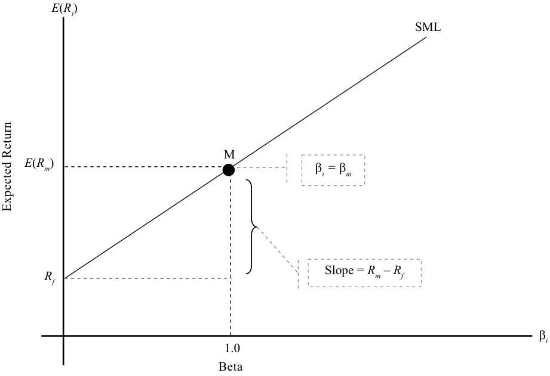
Chú thích hình ảnh: Trục tung: Tỷ suất sinh lợi kỳ vọng $E(R_i)$ (Expected Return); Trục hoành: Hệ số Beta $\beta_i$ (Beta). Đường thị trường chứng khoán ($\text{SML}$) xuất phát từ lãi suất phi rủi ro $R_f$, đi qua danh mục thị trường $M$ tại tọa độ $(\beta_m = 1.0, E(R_m))$, và có độ dốc $\text{Slope} = R_m - R_f$.
EXAMPLE 7
VÍ DỤ 7 (EXAMPLE 7)
Security Market Line and Expected Return
Đường Thị trường Chứng khoán và Tỷ suất sinh lợi Kỳ vọng (Security Market Line and Expected Return)
- Suppose the risk-free rate is 3 percent, the expected return on the market portfolio is 13 percent, and its standard deviation is 23 percent. An Indian company, Bajaj Auto, has a standard deviation of 50 percent but is uncorrelated with the market. Calculate Bajaj Auto’s beta and expected return.
- Giả sử lãi suất phi rủi ro là 3%, tỷ suất sinh lợi kỳ vọng của danh mục thị trường là 13%, và độ lệch chuẩn của nó là 23%. Một công ty Ấn Độ, Bajaj Auto, có độ lệch chuẩn là 50% nhưng không tương quan với thị trường. Hãy tính hệ số beta và tỷ suất sinh lợi kỳ vọng của Bajaj Auto.
Solution:
Lời giải (Solution):
Using the formula for β i , we can calculate β i and then the return.
Sử dụng công thức tính $\beta_i$, chúng ta có thể tính $\beta_i$ và sau đó tính tỷ suất sinh lợi.
E ( Ri ) = Rf + β i [ E ( Rm ) – Rf ] = 0.03 + 0 × (0.13 – 0.03) = 0.03 = 3.0%
Because of its zero correlation with the market portfolio, Bajaj Auto’s beta is zero. Because the beta is zero, the expected return for Bajaj Auto is the riskfree rate, which is 3 percent.
Do có hệ số tương quan bằng không với danh mục thị trường, hệ số beta của Bajaj Auto bằng không. Bởi vì hệ số beta bằng không, tỷ suất sinh lợi kỳ vọng của Bajaj Auto bằng lãi suất phi rủi ro, tức là 3%.
- Suppose the risk-free rate is 3 percent, the expected return on the market portfolio is 13 percent, and its standard deviation is 23 percent. A German company, Mueller Metals, has a standard deviation of 50 percent and a correlation of 0.65 with the market. Calculate Mueller Metal’s beta and expected return.
- Giả sử lãi suất phi rủi ro là 3%, tỷ suất sinh lợi kỳ vọng của danh mục thị trường là 13%, và độ lệch chuẩn của nó là 23%. Một công ty Đức, Mueller Metals, có độ lệch chuẩn là 50% và hệ số tương quan với thị trường là 0.65. Hãy tính hệ số beta và tỷ suất sinh lợi kỳ vọng của Mueller Metals.
Solution:
Lời giải (Solution):
Using the formula for β i , we can calculate β i and then the return.
Sử dụng công thức tính $\beta_i$, chúng ta có thể tính $\beta_i$ và sau đó tính tỷ suất sinh lợi.
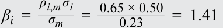
E ( Ri ) = Rf + β i [ E ( Rm ) – Rf ] = 0.03 + 1.41× (0.13 – 0.03) = 0.171 = 17.1% Because of the high degree of correlation with the market, the beta for Mueller Metals is 1.41 and the expected return is 17.1 percent. Because Mueller Metals has systematic risk that is greater than that of the market, it has an expected return that exceeds the expected return of the market.
Do có mức độ tương quan cao với thị trường, hệ số beta của Mueller Metals là 1.41 và tỷ suất sinh lợi kỳ vọng là 17.1%. Bởi vì Mueller Metals có rủi ro hệ thống lớn hơn rủi ro của thị trường, nó có tỷ suất sinh lợi kỳ vọng vượt quá tỷ suất sinh lợi kỳ vọng của thị trường.
Portfolio Beta
Hệ số Beta của Danh mục Đầu tư (Portfolio Beta)
As we stated above, the security market line applies to all securities. But what about a combination of securities, such as a portfolio? Consider two securities, 1 and 2, with a weight of wi in Security 1 and the balance in Security 2. The return for the two securities and return of the portfolio can be written as:
Như chúng ta đã nêu ở trên, đường thị trường chứng khoán áp dụng cho tất cả các chứng khoán. Nhưng còn sự kết hợp của các chứng khoán, chẳng hạn như một danh mục đầu tư, thì sao? Hãy xét hai chứng khoán 1 và 2, với tỷ trọng $w_1$ ở Chứng khoán 1 và phần còn lại ở Chứng khoán 2. Tỷ suất sinh lợi của hai chứng khoán và tỷ suất sinh lợi của danh mục đầu tư có thể được viết như sau:
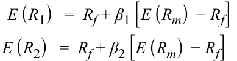
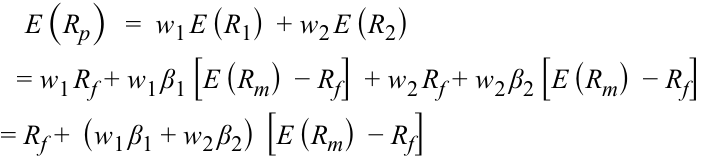
The last equation gives the expression for the portfolio’s expected return. From this equation, we can conclude that the portfolio’s beta = w 1β1 + w 2β2. In general, the portfolio beta is a weighted sum of the betas of the component securities and is given by:
Phương trình cuối cùng đưa ra biểu thức cho tỷ suất sinh lợi kỳ vọng của danh mục đầu tư. Từ phương trình này, chúng ta có thể kết luận rằng hệ số beta của danh mục đầu tư $= w_1 \beta_1 + w_2 \beta_2$. Nhìn chung, hệ số beta của danh mục đầu tư là tổng có trọng số của các hệ số beta của các chứng khoán thành phần và được cho bởi:
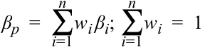
The portfolio’s return given by the CAPM is
Tỷ suất sinh lợi của danh mục đầu tư theo mô hình CAPM là:
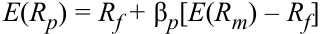
This equation shows that a linear relationship exists between the expected return of a portfolio and the systematic risk of the portfolio as measured by β p .
Phương trình này cho thấy tồn tại một mối quan hệ tuyến tính giữa tỷ suất sinh lợi kỳ vọng của một danh mục đầu tư và rủi ro hệ thống của danh mục đó được đo lường bằng $\beta_p$.
EXAMPLE 8
VÍ DỤ 8 (EXAMPLE 8)
Portfolio Beta and Return
Hệ số Beta và Tỷ suất sinh lợi của Danh mục Đầu tư (Portfolio Beta and Return)
- You invest 20 percent of your money in the risk-free asset, 30 percent in the market portfolio, and 50 percent in RedHat, a US stock that has a beta of 2.0. Given that the risk-free rate is 4 percent and the market return is 16 percent, what are the portfolio’s beta and expected return?
- Bạn đầu tư 20% tiền của mình vào tài sản phi rủi ro, 30% vào danh mục thị trường, và 50% vào RedHat, một cổ phiếu Hoa Kỳ có hệ số beta là 2.0. Cho biết lãi suất phi rủi ro là 4% và tỷ suất sinh lợi thị trường là 16%, hệ số beta và tỷ suất sinh lợi kỳ vọng của danh mục đầu tư là bao nhiêu?
Solution:
Lời giải (Solution):
The beta of the risk-free asset = 0, the beta of the market = 1, and the beta of RedHat is 2.0. The portfolio beta is
β p = w 1β1 + w 2β 2 + w 3β3 = (0.20 × 0.0) + (0.30 × 1.0) + (0.50 × 2.0) = 1.30
Hệ số beta của tài sản phi rủi ro $= 0$, hệ số beta của thị trường $= 1$, và hệ số beta của RedHat là $2.0$. Hệ số beta của danh mục đầu tư là:
E ( Rp ) = Rf + β i [ E ( Rm ) – Rf ] = 0.04 + 1.30 × (0.16 – 0.04) = 0.196 = 19.6% The portfolio beta is 1.30, and its expected return is 19.6 percent.
Hệ số beta của danh mục đầu tư là 1.30, và tỷ suất sinh lợi kỳ vọng của nó là 19.6%.
Alternate Method:
Phương pháp Thay thế (Alternate Method):
Another method for calculating the portfolio’s return is to calculate individual security returns and then use the portfolio return formula (i.e., weighted average of security returns) to calculate the overall portfolio return.
Một phương pháp khác để tính tỷ suất sinh lợi của danh mục đầu tư là tính tỷ suất sinh lợi của từng chứng khoán riêng lẻ rồi sử dụng công thức tỷ suất sinh lợi danh mục (tức trung bình có trọng số của tỷ suất sinh lợi các chứng khoán) để tính tỷ suất sinh lợi tổng thể của danh mục.
Tỷ suất sinh lợi của tài sản phi rủi ro $= 4\%$; tỷ suất sinh lợi của thị trường $= 16\%$
Return of the risk-free asset = 4 percent; return of the market = 16 percent RedHat’s return based on its beta = 0.04 + 2.0 × (0.16 – 0.04) = 0.28 Portfolio return = (0.20 × 0.04) + (0.30 × 0.16) + (0.50 × 0.28) = 0.196 = 19.6%
Tỷ suất sinh lợi của RedHat dựa trên beta của nó $= 0.04 + 2.0 \times (0.16 - 0.04) = 0.28$
Not surprisingly, the portfolio return is 19.6 percent, as calculated in the first method.
Tỷ suất sinh lợi của danh mục $= (0.20 \times 0.04) + (0.30 \times 0.16) + (0.50 \times 0.28) = 0.196 = 19.6\%$
Không có gì đáng ngạc nhiên, tỷ suất sinh lợi của danh mục đầu tư là 19.6%, giống như đã tính ở phương pháp đầu tiên.
CAPITAL ASSET PRICING MODEL: APPLICATIONS
MÔ HÌNH ĐỊNH GIÁ TÀI SẢN VỐN: CÁC ỨNG DỤNG (CAPITAL ASSET PRICING MODEL: APPLICATIONS)
9
9
calculate and interpret the expected return of an asset using the CAPM
tính toán và diễn giải tỷ suất sinh lợi kỳ vọng (expected return) của một tài sản bằng cách sử dụng CAPM
describe and demonstrate applications of the CAPM and the SML
mô tả và minh họa các ứng dụng của CAPM và SML
The CAPM offers powerful and intuitively appealing predictions about risk and the relationship between risk and return. The CAPM is not only important from a theoretical perspective but is also used extensively in practice. In this section, we will discuss some common applications of the model. When applying these tools to different scenarios, it is important to understand that the CAPM and the SML are functions that give an indication of what the return in the market should be, given a certain level of risk. The actual return may be quite different from the expected return.
Mô hình CAPM đưa ra những dự đoán mạnh mẽ và hấp dẫn về mặt trực giác đối với rủi ro cũng như mối quan hệ giữa rủi ro và tỷ suất sinh lợi. CAPM không chỉ quan trọng dưới góc độ lý thuyết mà còn được sử dụng rộng rãi trên thực tế. Trong phần này, chúng ta sẽ thảo luận về một số ứng dụng phổ biến của mô hình. Khi áp dụng các công cụ này vào các kịch bản khác nhau, điều quan trọng là phải hiểu rằng CAPM và SML là các hàm số đưa ra chỉ báo về mức tỷ suất sinh lợi trên thị trường nên là bao nhiêu (should be) ứng với một mức rủi ro nhất định. Tỷ suất sinh lợi thực tế (actual return) có thể rất khác so với tỷ suất sinh lợi kỳ vọng.
Applications of the CAPM include estimates of the expected return for capital budgeting, comparison of the actual return of a portfolio or portfolio manager with the CAPM return for performance appraisal, and the analysis of alternate return estimates and the CAPM returns as the basis for security selection. The applications are discussed in more detail in this section.
Các ứng dụng của CAPM bao gồm ước tính tỷ suất sinh lợi kỳ vọng cho hoạch định ngân sách vốn (capital budgeting), so sánh tỷ suất sinh lợi thực tế của một danh mục đầu tư hoặc nhà quản lý danh mục với tỷ suất sinh lợi CAPM để thẩm định hiệu quả hoạt động (performance appraisal), và phân tích các ước tính tỷ suất sinh lợi thay thế cùng tỷ suất sinh lợi CAPM làm cơ sở cho việc lựa chọn chứng khoán (security selection). Các ứng dụng này được thảo luận chi tiết hơn trong phần này.
Estimate of Expected Return
Ước tính Tỷ suất sinh lợi Kỳ vọng (Estimate of Expected Return)
Given an asset’s systematic risk, the expected return can be calculated using the CAPM. Recall that the price of an asset is the sum of all future cash flows discounted at the required rate of return, where the discount rate or the required rate of return is commensurate with the asset’s risk. The expected rate of return obtained from the CAPM is normally the first estimate that investors use for valuing assets, such as stocks, bonds, real estate, and other similar assets. The required rate of return from the CAPM is also used for capital budgeting and determining the economic feasibility of projects. Again, recall that when computing the net present value of a project, investments and net revenues are considered cash flows and are discounted at the required rate of return. The required rate of return, based on the project’s risk, is calculated using the CAPM.
Khi biết rủi ro hệ thống của một tài sản, tỷ suất sinh lợi kỳ vọng có thể được tính toán bằng cách sử dụng CAPM. Hãy nhớ lại rằng giá của một tài sản là tổng của tất cả các dòng tiền tương lai được chiết khấu theo tỷ suất sinh lợi yêu cầu, trong đó lãi suất chiết khấu hay tỷ suất sinh lợi yêu cầu phải tương xứng với rủi ro của tài sản đó. Tỷ suất sinh lợi kỳ vọng thu được từ CAPM thông thường là ước tính đầu tiên mà các nhà đầu tư sử dụng để định giá các tài sản như cổ phiếu, trái phiếu, bất động sản và các tài sản tương tự khác. Tỷ suất sinh lợi yêu cầu từ CAPM cũng được sử dụng cho việc hoạch định ngân sách vốn và xác định tính khả thi về mặt kinh tế (economic feasibility) của các dự án. Một lần nữa, hãy nhớ lại rằng khi tính giá trị hiện tại ròng (net present value – NPV) của một dự án, các khoản đầu tư và doanh thu ròng được coi là các dòng tiền và được chiết khấu theo tỷ suất sinh lợi yêu cầu. Tỷ suất sinh lợi yêu cầu, dựa trên rủi ro của dự án, được tính toán bằng cách sử dụng CAPM.
Because risk and return underlie almost all aspects of investment decision making, it is not surprising that the CAPM is used for estimating expected return in many scenarios. Other examples include calculating the cost of capital for regulated companies by regulatory commissions and setting fair insurance premiums. The next example shows an application of the CAPM to capital budgeting.
Bởi vì rủi ro và tỷ suất sinh lợi là nền tảng cho hầu hết mọi khía cạnh của việc ra quyết định đầu tư, không có gì ngạc nhiên khi CAPM được sử dụng để ước tính tỷ suất sinh lợi kỳ vọng trong nhiều kịch bản. Các ví dụ khác bao gồm việc các ủy ban quản lý nhà nước tính toán chi phí vốn (cost of capital) cho các công ty chịu sự điều tiết (regulated companies) và việc thiết lập mức phí bảo hiểm hợp lý (fair insurance premiums). Ví dụ tiếp theo trình bày một ứng dụng của CAPM vào hoạch định ngân sách vốn.
EXAMPLE 9
VÍ DỤ 9 (EXAMPLE 9)
Application of the CAPM to Capital Budgeting
Ứng dụng của CAPM vào Hoạch định Ngân sách Vốn (Application of the CAPM to Capital Budgeting)
GlaxoSmithKline Plc is examining the economic feasibility of developing a new medicine. The initial investment in Year 1 is $500 million. The investment in Year 2 is $200 million. There is a 50 percent chance that the medicine will be developed and will be successful. If that happens, GlaxoSmithKline must spend another $100 million in Year 3, but its income from the project in Year 3 will be $500 million, not including the third-year investment. In Years 4, 5, and 6, it will earn $400 million a year if the medicine is successful. At the end of Year 6, it intends to sell all rights to the medicine for $600 million. If the medicine is unsuccessful, none of GlaxoSmithKline’s investments can be salvaged. Assume that the market return is 12 percent, the risk-free rate is 2 percent, and the beta risk of the project is 2.3. All cash flows occur at the end of each year.
GlaxoSmithKline Plc đang xem xét tính khả thi về mặt kinh tế của việc phát triển một loại thuốc mới. Khoản đầu tư ban đầu vào Năm 1 là 500 triệu đô la. Khoản đầu tư vào Năm 2 là 200 triệu đô la. Có 50% khả năng loại thuốc này sẽ được phát triển và thành công. Nếu điều đó xảy ra, GlaxoSmithKline phải chi thêm 100 triệu đô la vào Năm 3, nhưng thu nhập từ dự án trong Năm 3 sẽ là 500 triệu đô la, chưa tính khoản đầu tư của năm thứ ba. Trong các Năm 4, 5 và 6, công ty sẽ kiếm được 400 triệu đô la mỗi năm nếu loại thuốc này thành công. Vào cuối Năm 6, công ty dự định bán toàn bộ bản quyền đối với loại thuốc này với giá 600 triệu đô la. Nếu loại thuốc này không thành công, không có khoản đầu tư nào của GlaxoSmithKline có thể thu hồi được (salvaged). Giả sử rằng tỷ suất sinh lợi thị trường là 12%, lãi suất phi rủi ro là 2%, và rủi ro beta của dự án là 2.3. Tất cả các dòng tiền đều phát sinh vào cuối mỗi năm.
- Calculate the expected annual cash flows using the probability of success.
- Hãy tính các dòng tiền hàng năm kỳ vọng bằng cách sử dụng xác suất thành công.
Solution:
Lời giải (Solution):
There is a 50 percent chance that the cash flows in Years 3–6 will occur. Taking that into account, the expected annual cash flows are:
Có 50% khả năng các dòng tiền trong các Năm 3–6 sẽ xảy ra. Có tính đến yếu tố đó, các dòng tiền hàng năm kỳ vọng là:
Year 1: –$500 million (outflow)
Năm 1: $-\$500\text{ triệu}$ (dòng tiền ra – outflow)
Year 2: –$200 million (outflow)
Năm 2: $-\$200\text{ triệu}$ (dòng tiền ra – outflow)
Year 3: 50% of –$100 million (outflow) + 50% of $500 million = $200 million
Năm 3: $50\%\text{ của } -\$100\text{ triệu}$ (dòng tiền ra) $+ 50\%\text{ của } \$500\text{ triệu} = \$200\text{ triệu}$
Year 4: 50% of $400 million = $200 million
Năm 4: $50\%\text{ của } \$400\text{ triệu} = \$200\text{ triệu}$
Year 5: 50% of $400 million = $200 million
Năm 5: $50\%\text{ của } \$400\text{ triệu} = \$200\text{ triệu}$